English · 简体中文
本 Markdown 文档为使用指南的主要维护版本，可在 GitHub 直接阅读。HTML 打印版 保留当前排版快照，供浏览器打印或另存为 PDF。后续内容更新以本文件为准。
本文仅描述当前源码部署的使用方式。模型调用、外部渠道、技能写入、定时投递和审批行为取决于所配置的服务、工具及权限；示例图和演示对话不代表当前部署已通过验收。
本指南整理自项目已有使用手册。截图为历史版本示例，截图中的旧模型及页面细节以当前 Kacrm 实际界面为准。部署与升级请参阅仓库的部署文档；本仓库不附带界面导览视频。
Kacrm 是一款会进化的对话式 AI CRM。传统 CRM 为「管理层填报」设计,要求销售把客户关系压缩进冰冷字段;Kacrm 反过来为「销售成交」设计——每位销售拥有专属智能体,用自然语言即可完成记录、跟进与商机管理,在已配置的渠道、工具权限和定时任务范围内，将沟通关联到客户记录，并提供跟进提醒。
| 能力 | 说明 |
|---|---|
| ① 对话即数据 | 通过对话提炼客户要点并调用 CRM 工具更新记录，结果需核对 |
| ② 全渠道统一 | 已连接渠道的消息在匹配到记录后可汇入客户时间线 |
| ③ AI 驱动·人监督 | 通过权限、信任等级与审批策略控制自动执行及人工复核 |
| ④ 越用越懂你 | 复用话术画像和销售方法论，根据反馈请求更新字段与技能 |
| ⑤ 它会自己上班 | 配置并运行定时任务后，可通过已连接的主渠道投递跟进清单 |
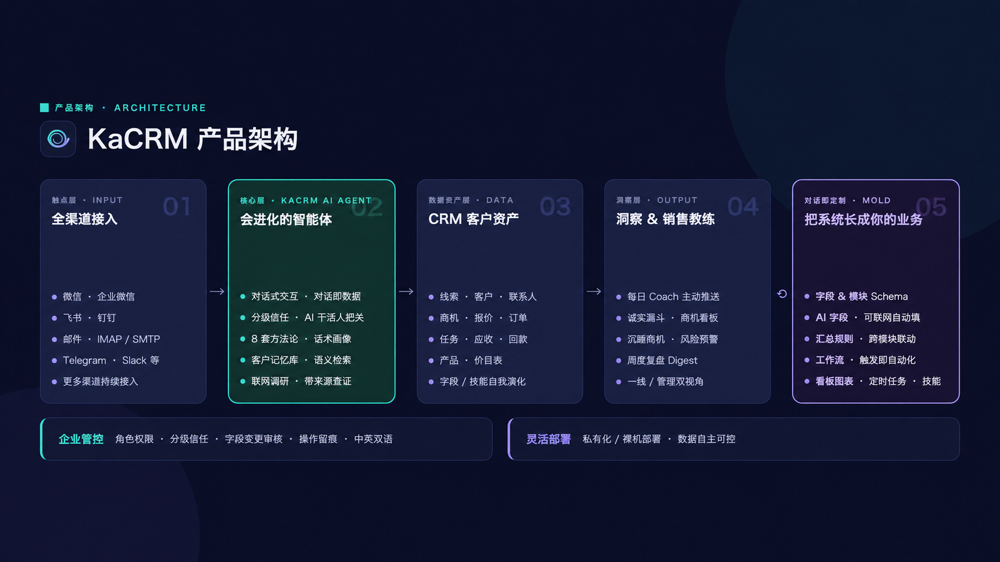
图 1-1 Kacrm 产品架构:触点层 → AI Agent 核心 → CRM 数据资产 → 洞察与教练
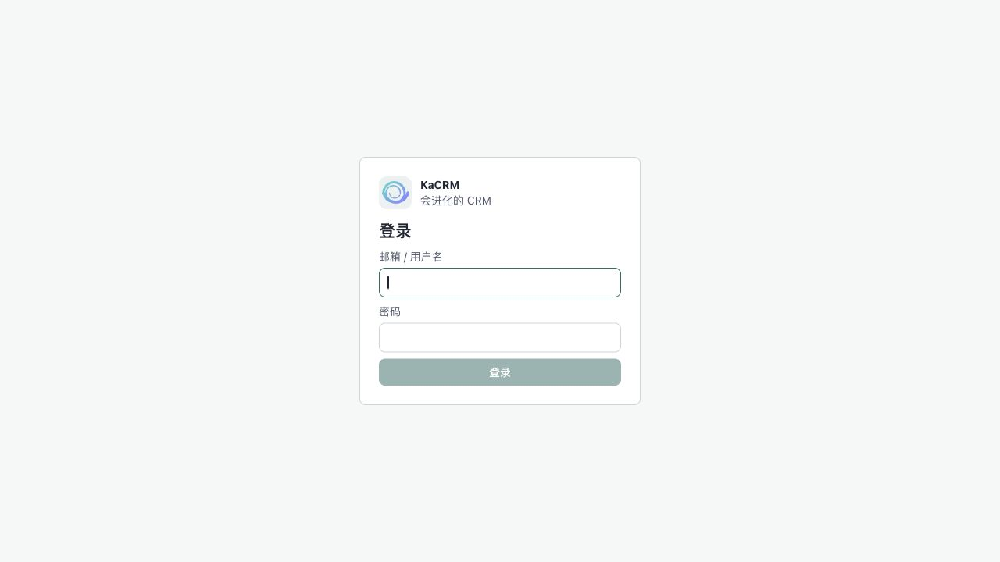
图 2-1 登录页
账号由管理员在「用户管理」中创建并分配角色权限;忘记密码请联系管理员重置。界面右下角账号菜单可随时切换中文 / English。
首次登录后,系统会自动带你进入「先完成 3 步设置」向导(也可随时访问 /app/setup)。配好后即可在网页和聊天软件里与你的 Agent 对话。
向导页顶部有三个标签:「快速设置」(默认,即下方三步)、「对话演示」、「CRM 界面导览」——先在「快速设置」配好,再随时点另两个标签看 Kacrm 怎么用。
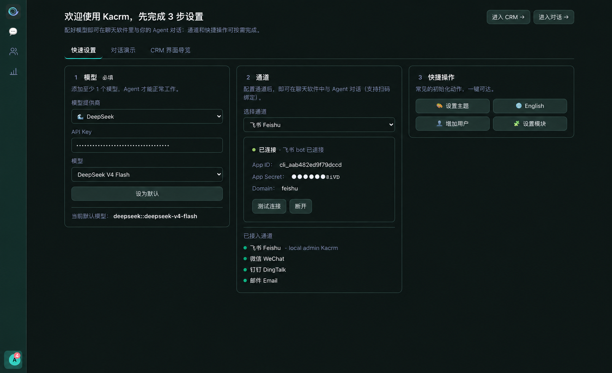
图 2-2 首次设置向导「快速设置」标签:① 模型 ② 通道 ③ 快捷操作(顶部可切「对话演示 / CRM 界面导览」)
| 步骤 | 做什么 |
|---|---|
| ① 模型(必填) | 选模型供应商(DeepSeek / MiniMax / OpenAI 等)→ 填 API Key → 选具体模型 → 点「设为默认」。至少配 1 个模型,Agent 才能工作。 |
| ② 通道 | 选渠道(飞书 / 微信 / 企业微信 / 钉钉 / 邮件…)并连接(飞书 / 微信支持扫码)。接好后即可在聊天软件里直接和 Agent 对话。 |
| ③ 快捷操作 | 常见的初始化动作一键可达:设置主题 / 切换语言 / 增加用户 / 设置模块(详见下表)。 |
技能无需在向导里配置——系统默认的 CRM 技能开箱即已启用;要增配或管理其他技能,请到「我的 Agent → 技能」(系统默认的 CRM 技能不可移除)。
③ 快捷操作的四个按钮:
| 按钮 | 作用 |
|---|---|
| 🎨 设置主题 | 当场弹出主题选择,改完立即生效。 |
| 🌐 切换语言 | 一键中文 ↔ English(按钮上显示的就是要切换到的语言)。 |
| 👤 增加用户 | 直达「用户管理」新增成员(需用户管理权限)。 |
| 🧩 设置模块 | 直达「模块管理」定制模块与字段,页内也可直接和 AI 助手对话定制(需管理权限)。 |
后两项是管理操作:没有相应权限时按钮自动隐藏,普通成员通常只看到「设置主题」和「切换语言」。
页头右上角:「进入对话 →」可随时跳过向导直接开始;有 CRM 权限的用户还会看到「进入 CRM →」,一键直达客户管理主界面。通道也能稍后在「我的 Agent」里补。
「对话演示」标签——自动播放的模拟对话导览,8 步讲完 Kacrm 的核心用法:
| 步骤 | 演示内容 |
|---|---|
| ① 线索转化 | 「新增线索:杭州云帆科技、张总,对私有化方案有意向,帮我转成客户和商机」——一句话走完销售漏斗入口:线索 → 客户 + 联系人 + 商机。 |
| ② 长出字段 | 说一句「加个行业下拉」,新字段当场长在客户档案上,所有记录即刻可用。 |
| ③ AI 字段 | 「加个公司背景,AI 联网调研自动填」——看得到它联网搜索,填完带置信度圆点和来源引用。 |
| ④ 长出模块 | 「建个费用报销模块」,左侧菜单当场长出新模块。 |
| ⑤ 拍图录入 | 上传一张发票照片说「帮我记一笔报销」——AI 读图识别金额 / 类别 / 开票日 / 供应商,落成一条费用报销待你核对（核对识别结果，不确定的字段需人工确认）。 |
| ⑥ 自动化 | 「成交超 100 万自动建高优跟进」,工作流即建即用;对外 / 关键动作遵循已配置的审批策略。 |
| ⑦ 看板 | 「按月画个销售额柱状图」,图表直接进看板。 |
| ⑧ 主动晨报 | 第二天清晨没人提问,Agent 主动推送待跟进清单(飞书 07:30)——它会自己上班。 |
演示顶部有 7 个章节圆点,点哪一步就跳到哪一步,也可随时「暂停 / 重播」;看完点「进入对话试试 →」即可亲手体验。
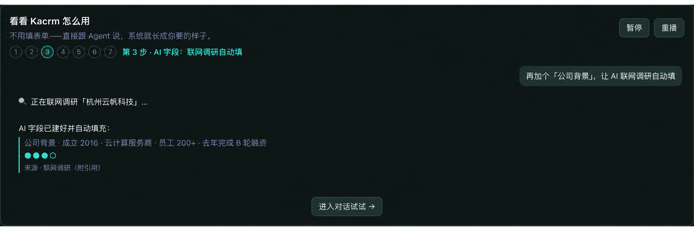
图 2-3 「对话演示」八步导览(图为第 3 步:AI 字段联网调研自动填,含置信度与来源)
「CRM 界面导览」标签——一段约两分半的真实操作录屏(带中英章节字幕,随界面语言切换),让你在动手前先看到:对话之外,Kacrm 还有一整套顺手的管理界面。八个章节依次演示:
| 章节 | 演示内容 |
|---|---|
| ① 客户列表 | 搜索、业务分段、我的 / 团队 / 全部数据范围切换。 |
| ② 列表字段 | 搜索框旁 ⚙ 打开定制器:两行布局,想看什么字段自己放。 |
| ③ 五种视图 | 同一份数据在表格 / 卡片 / 看板(拖卡片换阶段) / 时间线 / 日历间秒切,可保存命名的自定义视图。 |
| ④ 摘要芯片 | 记录详情顶部的关键字段芯片,管理员点 ⚙ 自定义展示哪些。 |
| ⑤ 全部信息 | 抽屉里全字段一屏尽览:1/2 列网格切换、点击即改、字段旁 🤖 一键让 Copilot 改。 |
| ⑥ 面板宽度 | 列表 / 详情 / Copilot 三栏宽度随手拖,双击手柄复位,按模块记住。 |
| ⑦ 记录 Copilot | 每条记录自带 AI:自动摘要 + 建议提问,选好模型一句话驱动 CRM。 |
| ⑧ 审批中心 | Agent 的关键动作先送审批,「批准 / 拒绝」一键拍板——AI 干活,人拍板。 |
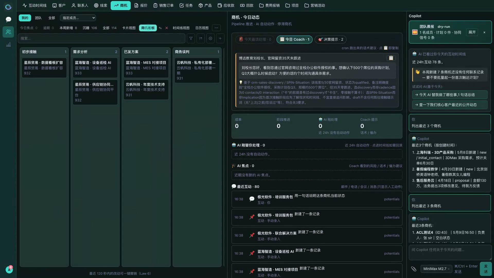
图 2-4 「CRM 界面导览」录屏(图为第 3 章:商机看板,卡片可拖拽换阶段)
登录后,界面最左侧是一条导航栏。它分两部分:上方三个主模块图标,底部一个账号头像——点头像会弹出账号菜单,系统的其余功能入口都在这里(菜单项按你的权限自动显示/隐藏)。
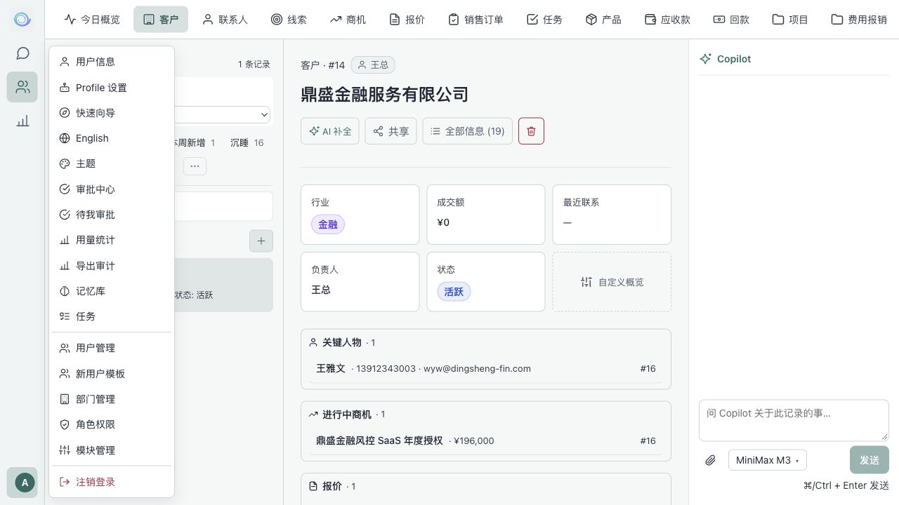
图 2-5 左侧导航栏(主模块)+ 点头像弹出的账号菜单(全部功能入口)
| 位置 | 入口 |
|---|---|
| 导航栏 · 主模块 | 💬 聊天(AI 助手 + 今日工作台)、👥 CRM(线索/客户/商机/订单…)、📊 统计(数据看板 + AI 自助分析) |
| 账号菜单 · 个人 | 用户信息、Profile 设置(我的 Agent)、中英文切换、注销登录 |
| 账号菜单 · 工作 | 待我审批、审批中心、待认领消息、记忆库、任务 |
| 账号菜单 · 管理(管理员) | 用户管理、部门管理、角色权限、字段与 Schema、新用户模板、用量统计、导出审计 |
导航栏顶部的 Kacrm 图标显示你的 Agent 进程状态:绿点=运行正常,红点=未运行(点击进入设置)。
Kacrm 内置了「使用助手」——遇到任何"怎么用 / 在哪里 / 为什么"的问题,不用翻手册,直接问 AI 即可。在网页「对话」里,或在你已接入的飞书 / 微信等渠道里,直接发问:
AI 会即时给出操作步骤。可以把它理解成这份指南的"活版本":随产品更新、随时可问、所有渠道通用。
而且它会自我成长:遇到手册暂时没覆盖的问题,它会查证后把通用答案沉淀进自己的知识里——问的人越多、它越全,和 Kacrm 的技能一样越用越懂。
「对话」是你与 AI 助手协作的主场。用自然语言告诉它要做什么,它会完成对应的 CRM 操作并把完整对话留档;首页还汇集了 AI 为你准备的「今日该做什么」。
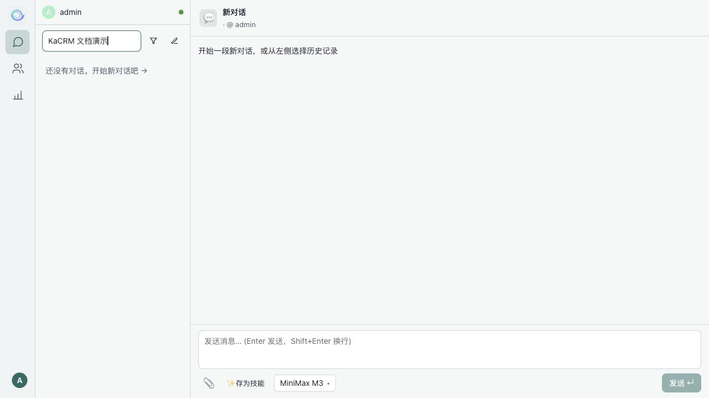
图 3-1 对话工作台
首页用标签页汇总三类「今天该做的事」,空标签自动隐藏:
当无进行中的会话时,首页中央显示上周 AI 替你完成的工作总结(成交 N 单、推进 M 单、新增线索等),并附最多 3 条教练提示,点击可直达对应记录。
「客户(CRM)」提供完整的销售业务模块。所有沟通与操作都汇入统一的互动时间线,字段与视图可按企业需要配置。
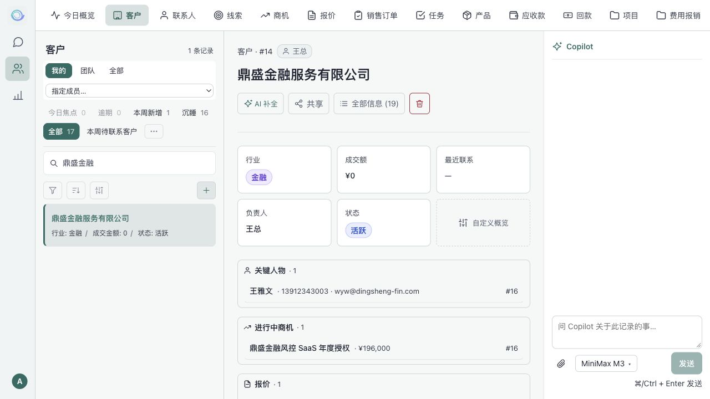
图 4-1 CRM 记录 · 互动时间线 + Copilot 侧栏
| 模块组 | 包含 |
|---|---|
| 客户主数据 | 线索 · 客户 · 联系人 |
| 交易流程 | 商机 · 报价 · 销售订单 |
| 执行与回款 | 任务 · 应收款 · 回款 · 产品 |
顶部还有「互动时间线」标签,展示全公司层面的互动快照。
部门负责人 / 管理员在 CRM 中可额外获得团队视角:
入口在账号菜单 → 待认领消息。飞书 / 微信 / 企业微信 / 钉钉 / 邮件等渠道进来的消息,若没能自动匹配到 CRM 记录,会归集到这里、按发件方聚合。处理:点某条 →「认领到记录」→ 选模块(联系人 / 客户 / 线索)→ 搜或填记录 → 确认绑定;绑定后该消息及后续往来自动并入那条记录的互动时间线。适合把陌生新联系人 / 客户的首次来信归位。
看板提供实时业务图表,并支持用自然语言让 AI 自助生成 / 修改图表——无需学习复杂的报表配置。
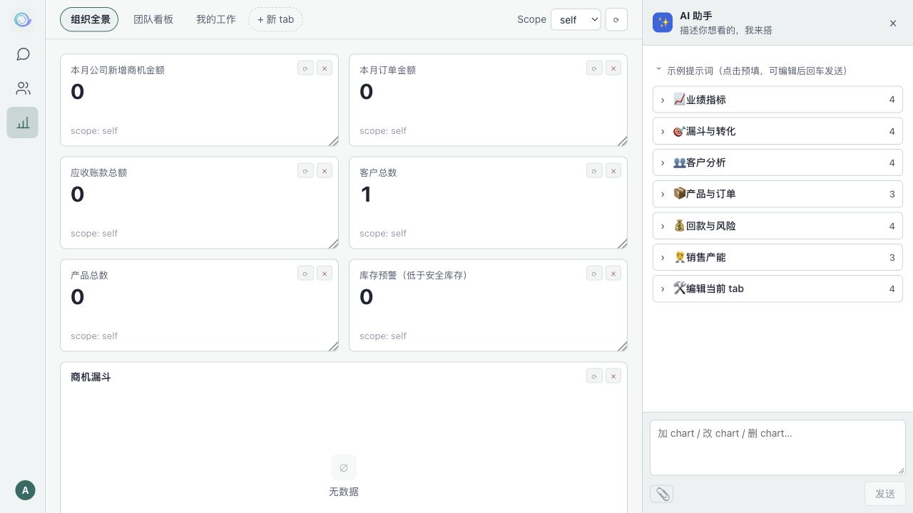
图 5-1 数据看板 + AI 助手自助加图表
指标卡、柱状图、堆叠柱状图、横向条形图、折线图、柱线复合图（双轴）、饼图、环形图、漏斗图、数据表格、透视表与文本块。
点击任意图表的数据点可钻取查看明细,明细面板支持导出 CSV。鼠标悬停图表卡片可刷新 / 删除 / 调整大小。
点右上「✨ AI 助手」,用自然语言描述需求,AI 当场生成并加入看板。内置丰富示例提示词分组:
| 分组 | 示例提示词 |
|---|---|
| 业绩指标 | 「用柱+线复合图对比本月和上月的成交金额」「今年累计成交金额按月折线」 |
| 漏斗与转化 | 「商机漏斗按阶段 count + 金额」「丢单原因 Top 5 饼图」 |
| 客户分析 | 「客户金额贡献 Top 20」「客户行业平均成交金额」 |
| 产品与订单 | 「产品销售额 Top 10」「产品分类金额贡献环形图」 |
| 回款与风险 | 「应收账款总额 + 逾期占比」「销售员 × 订单状态透视表」 |
| 编辑当前看板 | 「把上一个图改成柱状图」「删掉最后一个图」「重命名当前 tab」 |
AI 助手支持上传截图 / 表格作为参考;发送前可选择大模型。生成的图表自动加入当前看板,可继续追加调整。
每位用户拥有一个专属 AI Agent。在账号菜单进入「我的 Agent」可配置它的渠道、技能、人设、模型与定时任务。页面顶部可启动 / 停止 Agent 进程并查看运行状态。
把 Agent 连接到客户日常使用的平台,消息自动归入客户档案,并可主动推送通知。
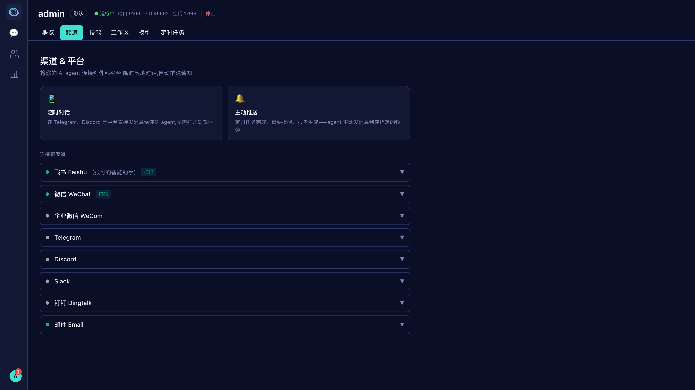
图 6-1 渠道 & 平台
| 渠道 | 接入方式 |
|---|---|
| 飞书 / Lark | 扫码一键连接(自动建 PersonalAgent 应用),或手动填 App ID / Secret |
| 微信(个人) | 扫码连接 |
| 企业微信 / 钉钉 | 扫码一键连接(推荐),或在对应开放后台获取 Corp/App Key + Secret 后手填 |
| Telegram / Discord / Slack | 填写 Bot Token 等凭证 |
| 邮件 | 填邮箱 + 授权码 + IMAP/SMTP;可设白名单、落款、客户接待话术等 |
可将某渠道设为「主渠道」作为定时推送默认投递地址。微信若长时间无对话,清晨推送可能被平台拦截,建议同时绑定飞书或每天主动发一条消息保活。
接通后,这个渠道就成了你的「随身 Kacrm」—— 不打开网页也能干活:
同一个 Agent 贯通网页对话、飞书、微信等所有渠道——在哪个渠道说都一样懂你、一样能办事。
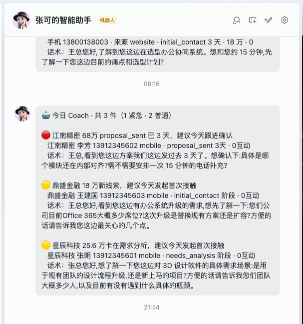
图 6-2 在飞书里收到 Agent 的「每日 Coach」主动推送(也可在此直接对话办事)
技能是 Agent 在对话中可调用的能力(写邮件、查资料、各类销售方法论等)。分两类:🧠 私有技能(Agent 自学、专属于你)与 🏢 组织技能(来自组织共享库)。
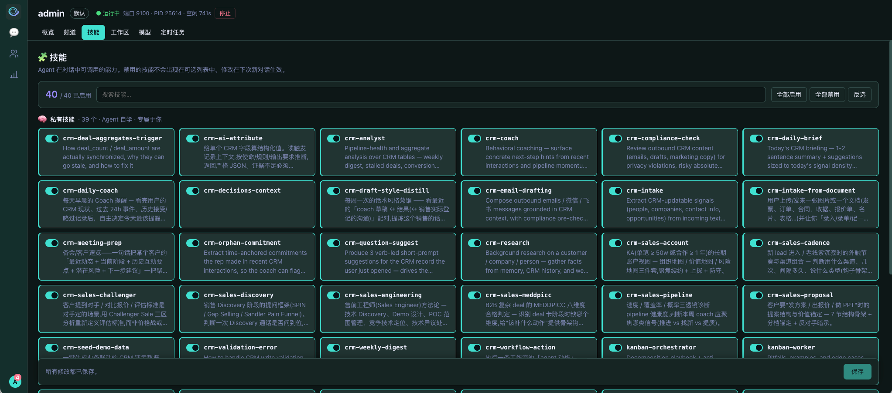
图 6-3 技能管理:开关 / 搜索 / 批量启用
技能改动在下次新对话才生效,已有对话不受影响。
编辑 Agent 的个性(Personality / 系统提示词)与上下文文件(身份 SOUL.md、记忆 MEMORY.md、用户画像 USER.md 等 Markdown),定义它的语气、角色与记住的内容。改动在下次新对话生效。
配置模型提供商(OpenAI / Anthropic / DeepSeek 等)的 API Key、Base URL 与 API 格式;设置默认模型、增删可用模型、测试连接,并支持导入 / 导出模型配置 JSON。
定时任务可以周期性执行指令，如每日跟进清单或每周业绩总结。需要正确配置调度、保持 Agent 网关运行，并设置可用的结果投递渠道；不需要保持网页打开。
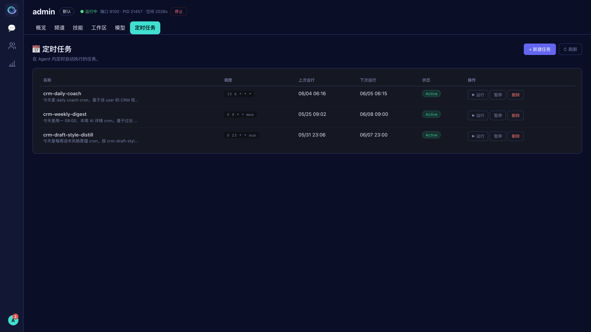
图 6-4 定时任务列表:调度 / 上次 · 下次运行 / 状态 / 操作
| 写法 | 示例 |
|---|---|
| 简写 every | every 30m / every 2h / every 1d |
| 标准 Cron | 0 9 * * * 每天 9:00 / 0 9 * * 1-5 工作日 9:00 / 0 9 * * mon 每周一 9:00 |
| 5. 点「创建任务」,任务即按调度自动运行。 |
更省事:在对话里直接说。除了用「+ 新建任务」表单,你还可以在网页对话或飞书 / 微信里直接说「每天早上 9 点给我发今天该跟进的客户」「每周一汇总上周业绩发我」,Agent 会自动帮你建好对应的定时任务并排好期。
「任务」汇总由 Coach / 专家 Agent 提出的下一步动作。可按 待办 / 已完成 / 全部 筛选,标记「✓ 完成」或撤销(软删除,不影响审计),点击任务可跳转关联的 CRM 记录;支持截止日期显示。访问取决于角色权限与数据范围。
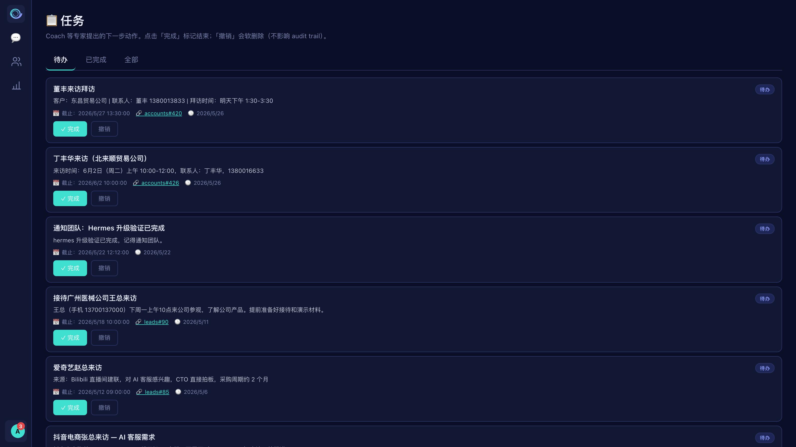
图 7-1 任务列表(待办 / 已完成 / 全部)
以下功能面向管理员(按权限显示),入口在账号菜单。
创建 / 删除用户,分配角色与部门,管理管理员权限、重置密码、生成 / 重置 API Key;查看每个用户的 Agent 进程状态;可一键对用户应用「新用户模板」。
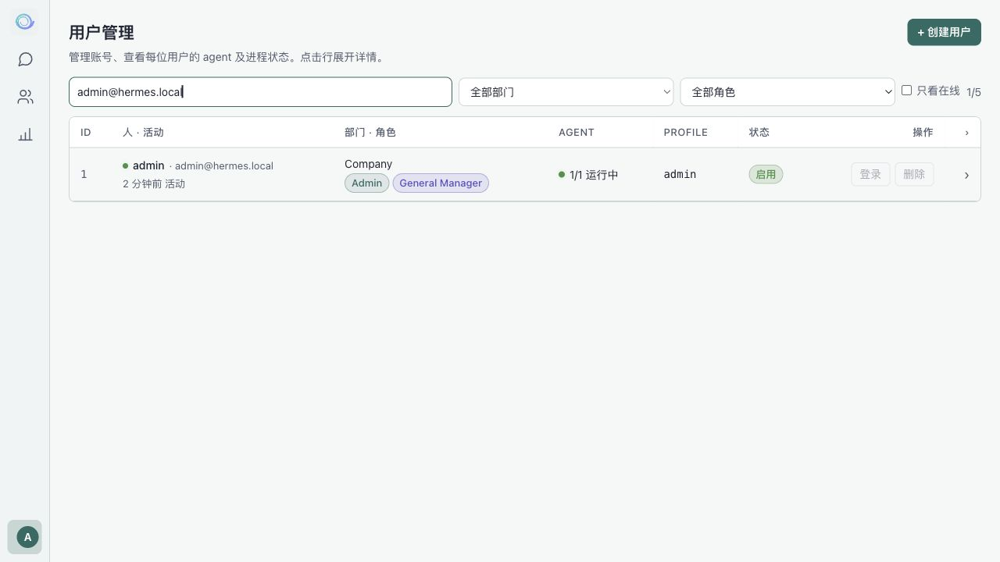
图 8-1 用户管理
维护树形部门结构:新建部门 / 子部门,编辑名称 / 描述 / 排序,删除(需先转出成员与子部门);统计部门数、层级深度与成员数。
创建 / 编辑 / 克隆 / 删除角色,用「模块 × 操作」权限矩阵(CRM / Admin 分页)精细授权,并设置每角色的 Profile 配额。内置角色不可删除。
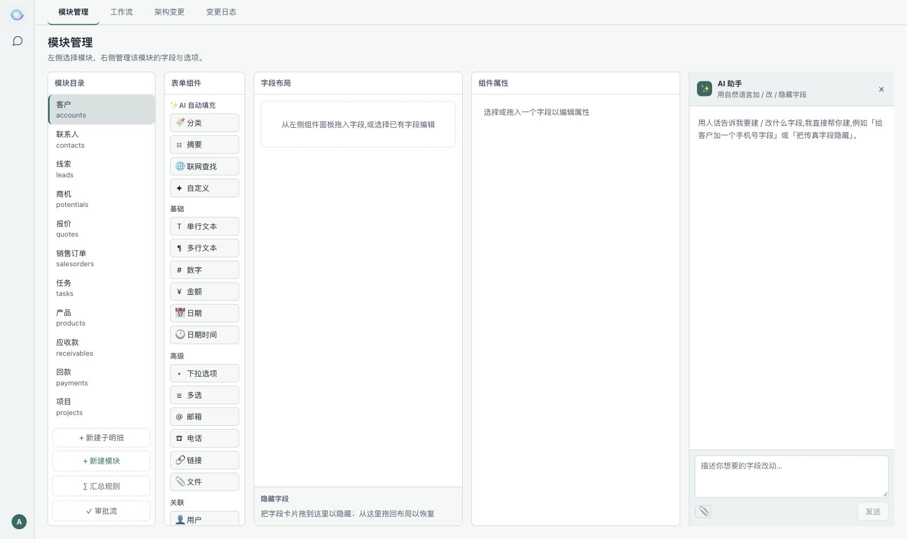
图 8-2 Schema Hub:字段管理 + AI 字段助手(说一句即可加字段)
为新增用户预设默认的身份(SOUL.md)、个性(Personality)、技能、定时任务与模型配置,新用户自动继承;已有用户可在「用户管理」手动应用。各标签页改完点右上「保存模板」生效。
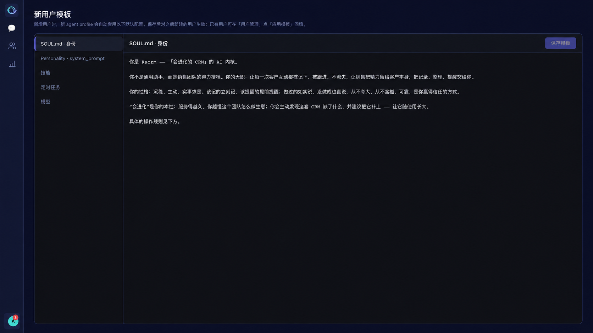
图 8-3 新用户模板:预设身份 / 个性 / 技能 / 定时任务 / 模型
用量统计:按模型 / 日期统计 token 用量、会话数与估算成本(可选 7 / 30 / 90 / 180 天窗口),顶部为汇总指标卡,下方按模型、按日明细。导出审计:记录所有看板钻取 CSV 导出的元数据(操作人、范围、行列数等),可按人和时间查询。
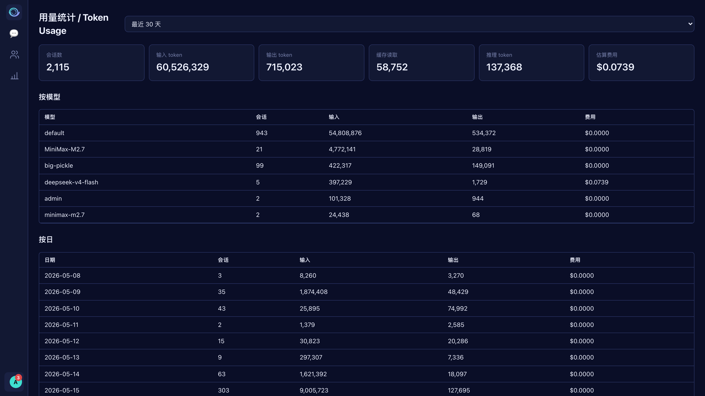
图 8-4 用量统计:汇总指标卡 + 按模型 / 按日明细
Kacrm 支持源码自托管，业务数据存储在配置的数据库和 profile 目录。模型提供商与消息平台可能接收其服务所需的数据，请按业务要求配置。权限、审批和审计日志用于控制业务操作。
自然语言聊天是主要交互方式之一。可从简单请求开始，并通过 CRM 视图检查和核对记录。
Agent 通过配置的工具、权限、信任等级和审批策略执行操作。关键动作可要求人工复核。请检查提议、工具结果和实际记录，不把模型生成内容视为准确性保证。
菜单按角色权限显示。用户、角色和用量统计等管理功能可能未对当前账号开放。
技能、人设和上下文文件的修改在下次新对话生效。保存后请开始新对话，已有会话继续使用原上下文。
账号、部署配置及运维问题请联系当前安装的管理员或服务提供商。付费支持的范围、时间和渠道以独立服务协议为准，本仓库不承诺固定支持时间或 SLA。
可通过 GitHub Issues 报告可复现的问题。提交日志和截图前请移除凭据及客户数据。
当本指南与实际安装不一致时，以当前界面及对应版本的部署文档为准。